在 Inertia，我们见过太多优秀的设计在走向量产的路上折戟沉沙。也正因为如此，我们始终坚信：面向制造的设计（DFM）不是制造前的一道检查工序，而是从设计的第一天起就该嵌入产品的基因。
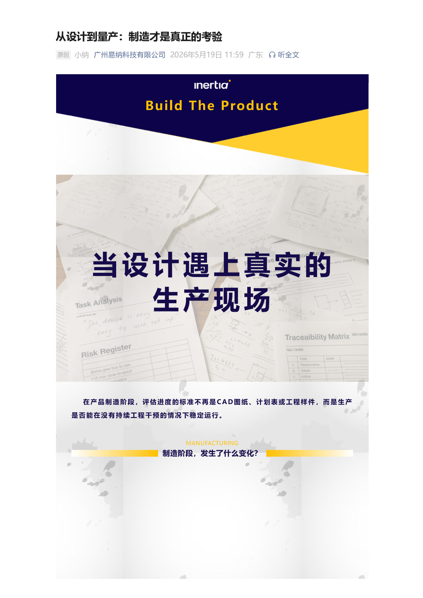
一台功能完美的原型机，离一款可稳定量产的产品，究竟有多远？在医疗器械领域，这个问题的答案往往决定着项目的生死。设计定义了产品的可能性，而制造，才真正决定了产品的现实性。

Part 1 原型很美，量产很难——为什么大多数项目卡在这里
在实验室或手板车间里做出一台功能完美的原型机，考验的是创意与工程能力；而将这"唯一一台"复制成百上千台——每一台都同样可靠、一致、可追溯——考验的则是完全不同的另一套能力体系。
我们常常看到这样的困境：设计师在 CAD 软件里完成的精美模型，到了注塑车间却面临缩水、翘曲、飞边；在洁净工作台上手工组装的样机顺畅无比，上了产线却效率骤降、良率崩塌。这不是谁犯了错，而是设计与制造之间天然存在一道鸿沟，需要有经验的工程团队主动去弥合。
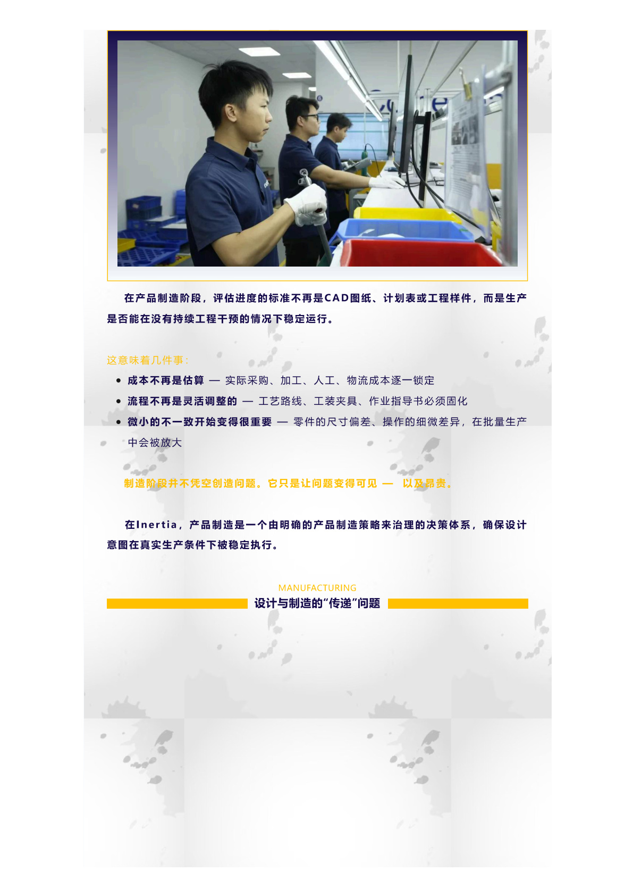
Part 2 DFM：不是在制造前检查，而是从设计第一天就嵌入
真正的 DFM（Design for Manufacturing），不是在设计完成后拿给制造部门"过一下"，而是在概念阶段就邀请制造工程师同席而坐——共同审视材料选择、壁厚分布、分模线位置、公差策略、装配序列，甚至包装与灭菌方式。
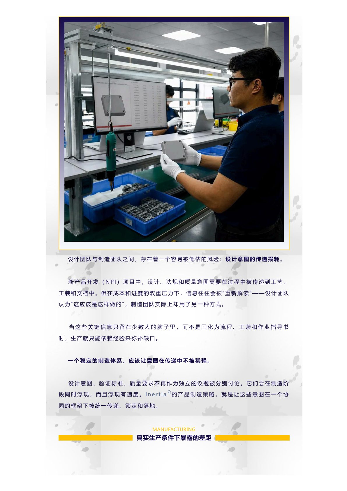
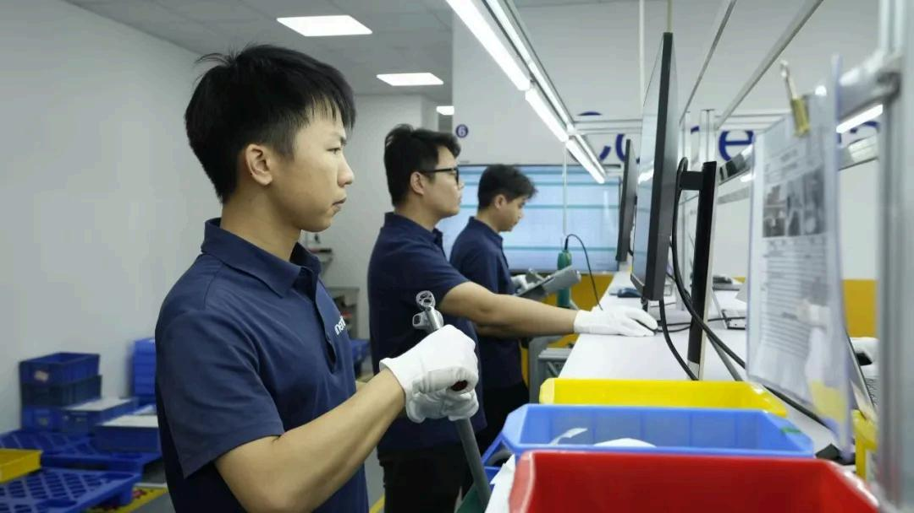
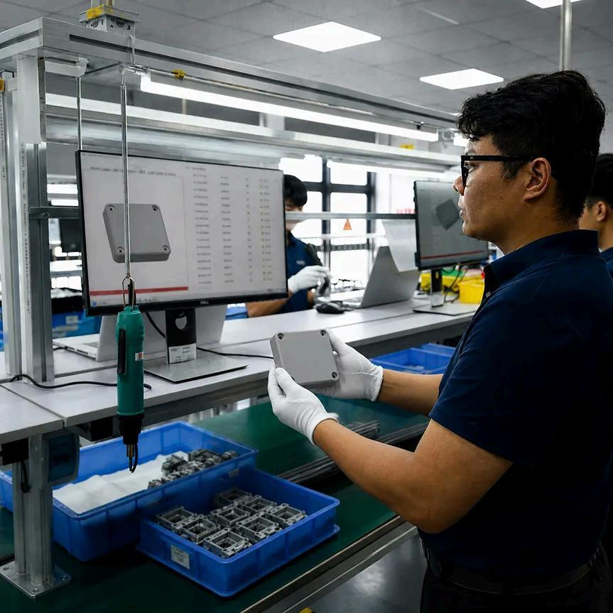
在 Inertia 的 DFM 实践中，我们遵循三个核心原则：其一，材料即设计。塑料的流动特性、金属的热处理变形、硅胶的硫化收缩——不了解材料的"脾气"，设计得再好也难以落地。其二，公差即成本。每一微米的收紧都意味着制造成本的指数级上升，好的 DFM 工程师懂得在功能需求与经济效益之间找到最优解。其三，装配即体验。产线上的每一秒都是成本，防错设计、模块化策略、定向定位特征，这些看似微小的细节，直接决定了量产的效率与品质稳定性。
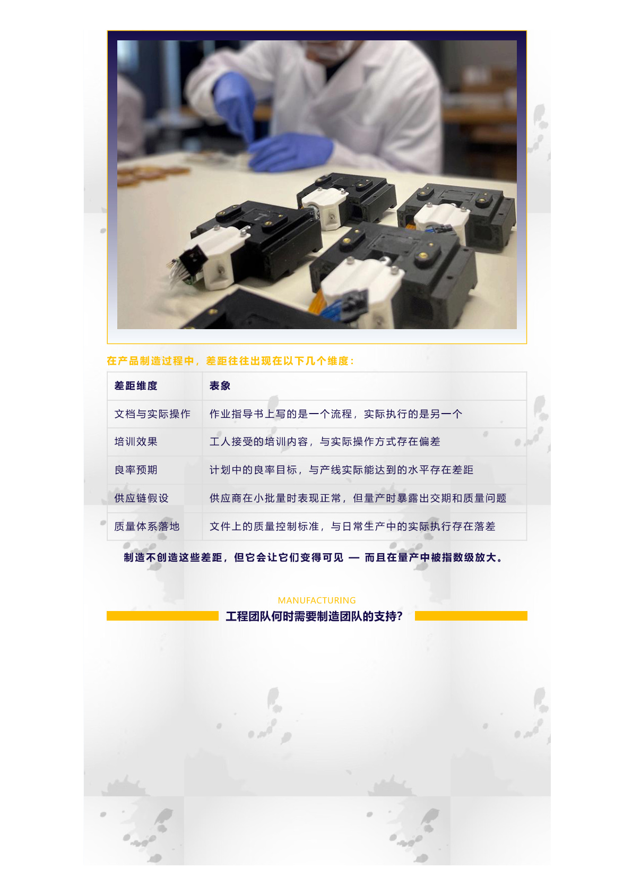
Part 3 从原型到量产之路：Inertia 的四阶段方法论
基于多年医疗器械产品化经验，Inertia 总结出一套从原型到量产的系统方法论，每一步都以 DFM 为主线贯穿始终。
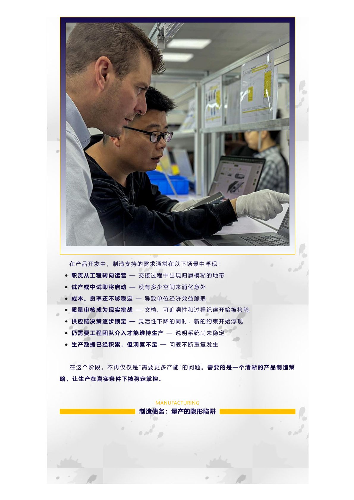
第一阶段：设计审查与可行性评估。在设计文件移交之前，我们的制造工程师团队便深入介入——评审材料选型、结构合理性与工艺路线，输出完整的 DFM 报告，标记所有潜在风险点，并与客户设计团队逐条对齐优化方案。
第二阶段：工艺验证与小批量试产。从不跳过"工程批"环节。在真实生产环境中投料试制，采集注塑参数、装配工时、测试数据，将每一个工艺窗口锚定在统计过程控制（SPC）的可控区间内。
第三阶段：供应链纵深打通。无论是国内还是海外物料，Inertia 的供应链团队从供应商审核、模具开发、来料检验到物流通关，建立端到端的韧性供应体系，确保量产不缺料、不断链。
第四阶段：量产爬坡与持续改善。量产的启动不是终点，而是持续优化的起点。我们以数据驱动的方式跟踪每一项关键质量指标（KPI），持续挖掘效率提升与成本优化的空间。
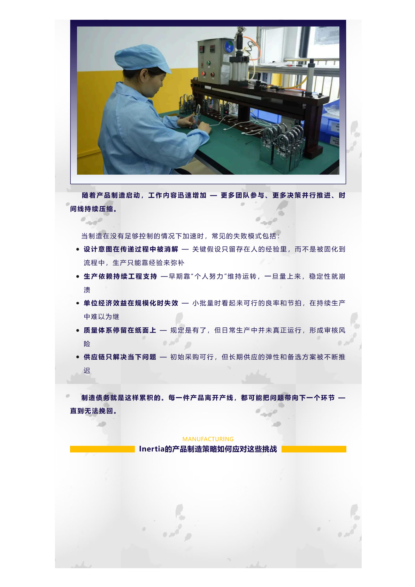
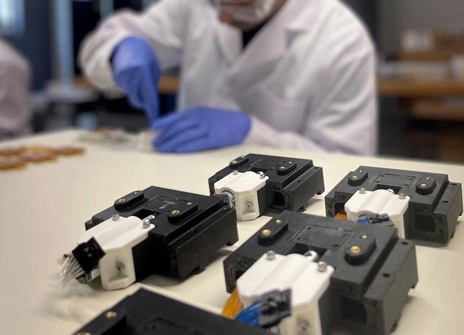
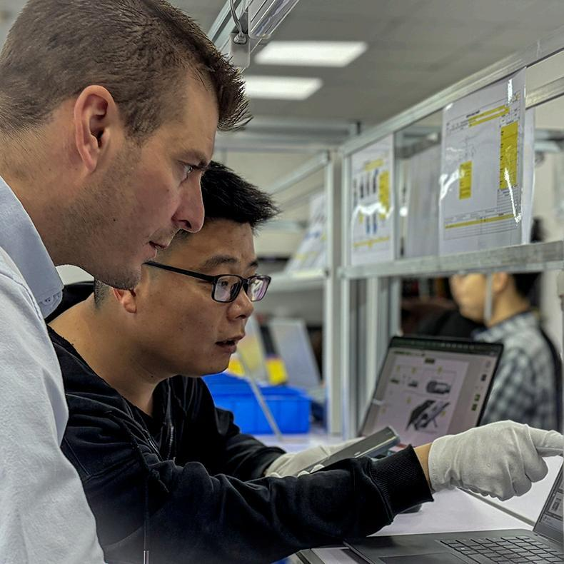
好的设计让产品诞生一次，好的制造让它诞生一千次。DFM 是连接"可以做到"与"可以持续做到"的桥梁。
Part 4 真实案例：DFM 如何让一个"不可能"的项目起死回生
一个来自北美的微流控芯片项目，设计阶段花了一年半，原型功能完美。但当客户带着图纸满世界寻找制造商时，却吃了二十多家工厂的闭门羹——原因很简单：设计上需要的 0.05mm 微通道一致性，在量产级别的注塑条件下几乎无法实现。
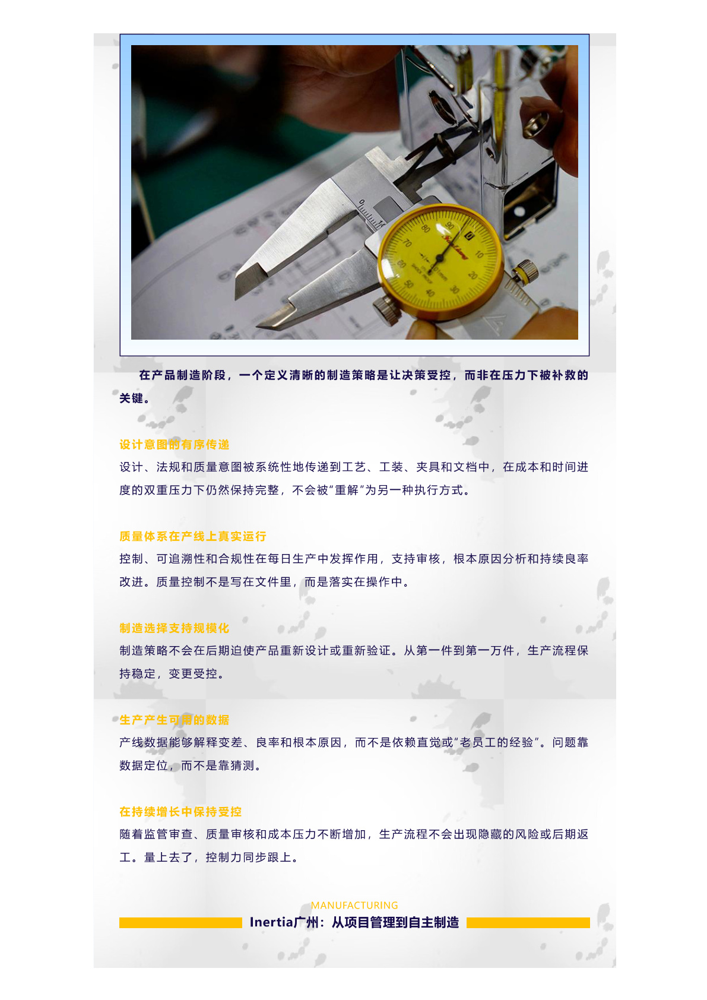
Inertia 接手后，我们的 DFM 团队与客户的 R&D 团队进行了连续三周的密集协同。通过流道模拟分析，我们在不改变芯片功能的前提下，对微通道的截面形状做了 0.02mm 级别的细微调整，并将原设计的五点进胶改为单点热流道加模温精确控制的方案。配合定制化的模具钢材选择和纳米涂层处理，最终将微通道的注塑一致性控制在 ±0.005mm 以内——不仅实现了量产，良率还稳定维持在 96% 以上。
这不是奇迹，是 DFM 方法论和经验的系统性胜利。
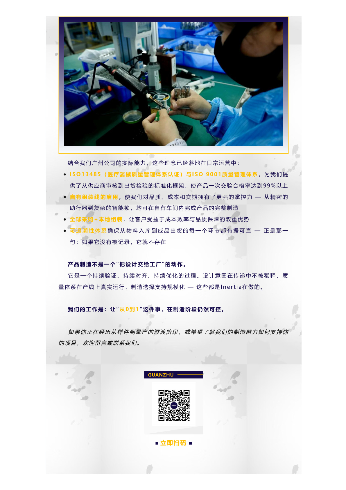
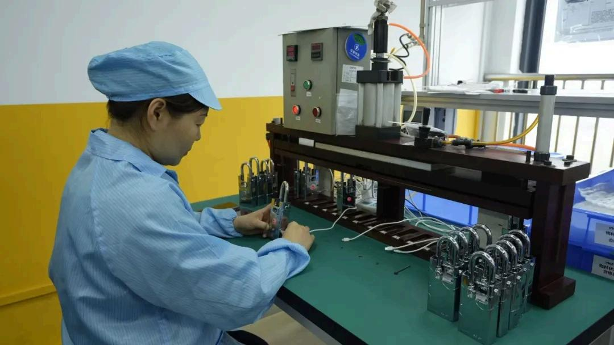
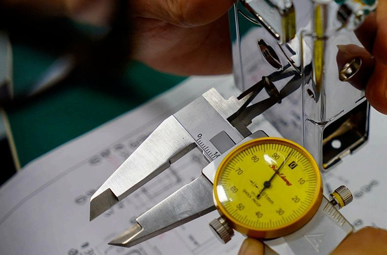
Part 5 制造，是设计最好的检验
在 Inertia 的价值观里，设计与制造不是上下游的接力关系，而是一场从第一天就开始的双人舞。设计师负责想象产品的上限，制造工程师负责守住产品的底线——两者之间的张力与协作，正是优秀产品诞生的土壤。
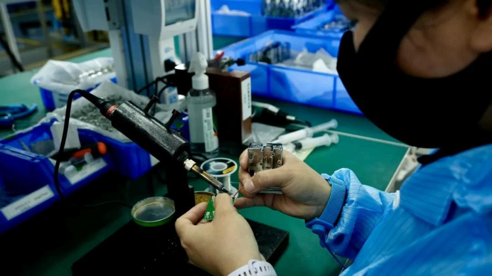
面向制造的设计，本质上是一种思维方式：不是问"这个设计能不能做"，而是问"这个设计怎么做才能稳定地、经济地、可规模化地做"。从原型到量产的距离，就是我们用工程经验为你压缩的距离。
原型证明了想法可行，量产证明了商业可行。在医疗器械领域，只有走完从设计到量产的全流程，产品的价值才能真正触达患者。 如果你正在把一款医疗器械从图纸推向产线，Inertia 的 DFM 团队愿意成为你最可靠的同行者。